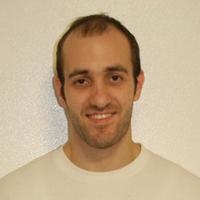

My main research interest is to move from genes to function, in order to understand how genetic variability mechanistically leads to an increased risk of developing multiple sclerosis (MS). Additionally, I have been using genomic tools and mouse genetics to understand MS pathophysiology.
- 2001-2004 B.S, Cell and Molecular Biology, University of Bari, Italy
- 2004-2006 M.S, Molecular Biology, University of Bari, Italy
- 2006-2010 Ph.D., Prion Diseases, International School for Advanced Studies, Italy
- 2011-2013 Postdoctoral Fellow, Ken and Ruth Davee Department of Neurology, Feinberg School of Medicine, Northwestern University, Chicago, IL
- 2013-Present Postdoctoral Fellow, Department of Neurology, University of California, San Francisco, CA
-
Awards and Honors
- 2015-2017 Italian Multiple Sclerosis Foundation (FISM) Senior Research Fellowship
- 2015 Travel grant for the 140th Annual Meeting of the American Neurological Association
-
Recent Publications
- A. Didonna. Preclinical Models of Multiple Sclerosis: Advantages and Limitations towards Better Therapies. Current Medicinal Chemistry 2016 23:1421-38.
- A. Didonna, F. Benetti. Post-translational modifications in neurodegeneration. AIMS Biophysics 2016 3(1): 27-49.
- A. Didonna, N. Isobe, S. J. Caillier, K. H. Li, A. L. Burlingame, S. L. Hauser, S. E. Baranzini, N. A. Patsopoulos and J. R. Oksenberg. A non-synonymous single-nucleotide polymorphism associated with multiple sclerosis risk affects the EVI5 interactome. Human Molecular Genetics 2015 24(24):7151-8.
- A. Didonna, A. C. Venturini, K. Hartman, T. Vranac, V. C. Serbec and G. Legname. Characterization of four new monoclonal antibodies against the distal N-terminal region of PrPc. PeerJ 2015 3:e811.
- A. Didonna and J. R. Oksenberg. Genetic determinants of risk and progression in multiple sclerosis. Clinica Chimica Acta 2015 449:16-22.
- A. Didonna and P. Opal. The promise and perils of HDAC inhibitors in neurodegeneration. Annals of Clinical and Translational Neurology 2015 2:79-101.
- A. Venkatraman*, Y. S. Hu*, A. Didonna*, M. Cvetanovic*, A. Krbanjevic*, P. Bilesimo and P. Opal. The histone deacetylase HDAC3 is essential for Purkinje cell function, potentially complicating the use of HDAC inhibitors in SCA1. Human Molecular Genetics 2014 Jul 15;23(14):3733-45. *These authors equally contributed to the study.
- A. Didonna. Prion protein and its role in signal transduction. Cellular and Molecular Biology Letters 2013 Jun;18(2):209-30.
- A. Didonna, J. Sussman, F. Benetti, G. Legname. The role of Bax and caspase 3 in Doppel induced apoptosis of cerebellar granule cells. Prion 2012 Jul 1;6(3).
- A. Didonna and G. Legname. Aberrant ERK 1/2 complex activation and localization in scrapie-infected GT1-1 cells. Molecular Neurodegeneration 2010 Aug 9;5:29.